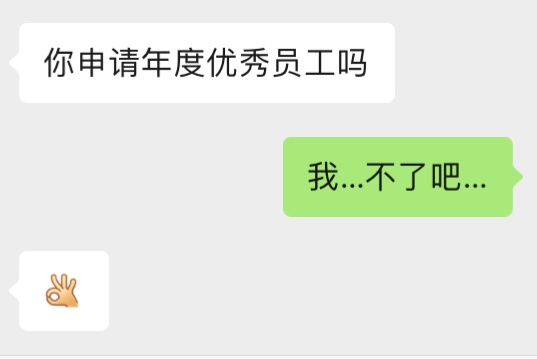
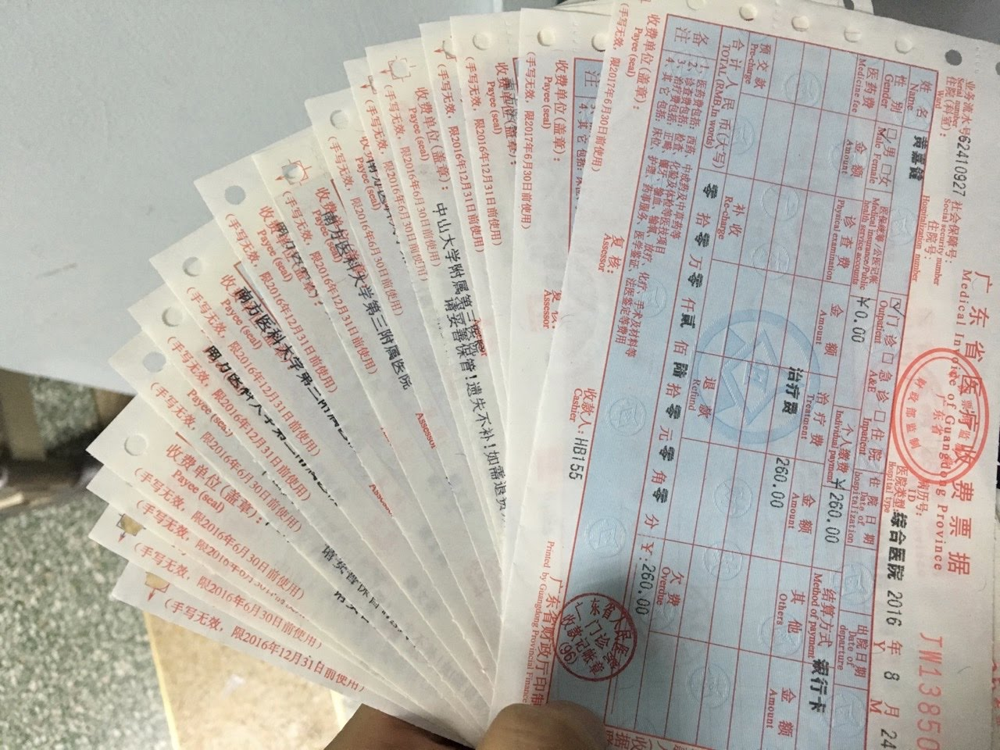

朝顔
如果你想说，那我就在听．
Sunshine
压力很大．
一年了，不过今年的立春还没到．
以前我大概会说，好快啊．现在也会感觉到挺快的，但好像也没有感受到的那么快．
那天，我戴着人生的第一个口罩，在车站的KFC里呆了一整个下午，然后才坐的车回家．穿着和今天一模一样的衣服，下车后并没有坐公交回去，走了一路，就是因为太冷了．之后，……，仿佛回到了那一天．每一帧，都像放电影一样，完完整整丝毫没有遗漏地出现在脑海里．有时发呆的时候，闭上眼，浮现的就是走在京都小道情景．拥有这一种能力，不知道是值得庆幸还是悲哀．
一年，很多，不少．回想起来，最大的感受就是，跟最初开始说的一样，感觉（我的）生活里，感受到失去的很多东西和情感，在被一一唤醒一样．此刻的我，边敲着键盘边想的我，第一感受便是这样，不是要说要有多大的喜悦，也不是要说有过多大的悲伤；而是，因为一个人的存在，我和我的面对的一切，变得和以前有点不一样了．
当然，一路上的笑容和眼泪，同样是那么的实在，想起来心依然怦怦怦地跳．泪水或许时常或总会有，但心里最想的，是所惦记的微笑，能如初见一样．
再细想，半年前承诺的事，自问已经做得了．剩下的，只能靠你（看你）．路上，依旧还有我．但愿能让你进步．
我承认昨晚的确让我今天状态有点影响，无论情绪还是状态，不过我至少白天没睡着……
常常说自己也是老人，但看着你吃东西时得意的样子，一下子就会感觉年轻得多．嗯，跟那天一样．所以，很喜欢偷偷地拍下来．
吃东西，学习，看电影，这两天一直在想的平凡．终究还是来了．写到这里的时候，突然发现今天没有拍照，有点想哭，眼泪打了一下转，没有流下来．
谢谢这一路有你．尽管这是个朴实无华的一周年．
我对你的所有都好奇，只要你想说，我都会在听．大多数事我都只是不知道应该不应该问．我是一个很八卦的人，也会想知道身边人的身边事．只是不知道应该不应该问．同样，我也努力做到可以主动和对方说出想让她知道的事．
- 有没有？
- 为什么？
答案，只有自己可以知道．
相似是不是更好与不相似是不是更好并不互斥，它们之间，还有相似可能不是很好．一路子的日子，无论什么事情，都只能肯定和否定当前一个答案，无法肯定或否定下一个答案．
我觉得星期五是你的unlucky day．
倔强的孩子．无奈的大叔．
我觉得我就是不应该和坐我旁边的人玩在一起，对我来说这就是自甘堕落．我不喜欢工作的时候戴上耳机，但我戴上了耳机．
阻碍人类社会进步的一大障碍就是：自以为视．我常常会不自己的地以为有些事只有我自己才能做得到．我知道这样的事情肯定是存在的，只是我不知不觉地在扩大这个集合，到意识到的时候才狠狠地骂自己两句：醒醒吧！然后让自己去接受“犯了这一错误”这个事实．但我的内心，依然对扩大这个集合蠢蠢欲动．
已经变得不喜欢回家……在车上一直想给你拍日出，但都没拍好，转眼就要下车了．
早上8点40分时，地铁里一大堆人．进来的，出去的．传进耳朵里的声音除了地铁的广播，就是人们的脚步声．
出站的时候，一个老伯在前面跟着人们一起走着．他被人流挤着走到了橙色的闸机里，手里的绿色车票在感应处怎么都没有反应．好心人提醒他，你要走旁边蓝色的闸机．他开始慌张起来，穿插在人流里走到普通闸机旁边．后面的大姐跟他说，你要把车票塞进去，塞进去才能开．队伍里拥挤的人群开始停了下来，开始出现不耐烦的声音．可能害怕车票被回收，听到大姐的说话，他变得更加慌张了：“我要坐车，我还没坐！”——原来他还没有乘车．人群没有因此停留下来，听到吵杂声，地铁的工作人员走了过来……
不知道为什么，眼角就湿了，泪水打滚了两圈．曾经听说，造地铁、高铁等好多人，可能根本自己都没坐过．不知道他们是不是就是别人说的时代的泪滴．也有很多底层的人们，可能已经跟不上时代进步的步伐．而我，也并不认为自己有多高层．
从大学第一次拿起球拍到现在，原来已经13年了．打过的球，粗略估计，可能也有10来20万个．今晚终于有一点点感觉了，仿佛知道了，拉球是怎么的一回事．看过无数的视频，也被数个人手把手地教过．我想，和治疗想比，我这应该是菜中之菜了．还好把打球当成了老了以后去公园霸场的爱好，最坏的结果也不过是到时满地跑去捡球．不知道这么笨的我，能不能让你有点信心，让你相信你已经很棒了．
评优，想了3秒之后，我拒绝了．我不配，也不在乎．就是这样一种人．

心里一惊，在那几十秒里闪过了之前几次的所有场景，每一个都像放电影一样，完整地播放了一次．然后回想早上到现在的每一件事，到底哪里出了差错．感觉，我也是只惊弓之鸟．
躲在被窝里，暖暖的．明明没有那么冷，但是身子就是想蜷缩起来，抱着自己的腿．然后，赖床．不想想工作的破事．
在被窝里的时候，又会翻翻以前写的东西，也会看看朋友圈，还会想起写过的那几封信．也想起你说你讨厌那样的自己，我，也讨厌现在这样的自己．以前能够6点起床去图书馆，风雨不改，现在起床为什么就这么难了．想看的书，文章越堆越多，仿佛永远也不会看完一样．起不来，起不来．是天冷了，是我累了，还是一句老了就可以敷衍一下．
再也不敢说自己雷厉风行，做事利索了．
明知道自己不应该再浪费每一分每一秒，但一分一秒就在浪费．常常问自己是不是不够努力，常常问自己是不是装得太清高．当怀疑的时候，就会觉得眼前所有 的一切突然变得那么格格不入．想起你的话，浮现出来的就是一个大大的否定．
在星巴克看到三个中学生在很认真地学习．想起自己的初中的时候都没怎样努力过，现在看到她们倒是感触满满，不知道是不是看到了曾经的自己迟来的读了研才想要的努力．
我也讨厌这样的自己．
冬天当然是要吃热的东西了．也许是被我妈教训得多，这个印象一直常常地刻在心里．
早上去买早餐的时候，排了一会，想点个炒米粉，这是看起来好几个小炒里最不油的那个了．正当要到我的时候，阿姨捧了一大盘刚做好热气腾腾的陈村粉出来，我想都没有就想直接说，“你好，我要一份陈村粉”．在学校的时候，我总是第一个去饭堂吃饭，因为我想吃热的，我想吃新鲜的．何况在冬天不吃热的东西，感觉就像没吃一样．习惯了以后，夏天也喜欢吃热的东西．比如喝汤，对我来说，无论是滚的还是老火煲的汤，如果不是热的，那就没有灵魂．
当然也有例外的时候，就是喝冰水，去日本的短短两周时间，就让我习惯了喝冰水．当冰水流过齿缝的时候，除了感觉口里的脏东西一扫而空之外，一种完成了“吃饭”这一件事（这一过程）的感觉油然而生，仿佛就像一个仪式．
感觉你最一段时间也累了，也许不是身体上的疲倦．
曾经运动的时候伤到腰了，让我疼了好久，所以，我特别怕死．想起自己也有手受过的时候，所以尽管唠叨，还是会不停地和你说，要好好保管好自己的“骨头”．

Figure 2: 那个药罐子的年代
小寒．不知不觉节气也已经进入倒数的阶段．
说是小寒，但实际上比前两天还要暖和．有趣的是，手上更加干燥了．让我想起了读书的时候总会长“萝卜”．好多年不见“萝卜”长出来了，取而代之的是干燥的皮肤和裂纹．大概是年轻的时候皮肤娇嫩的才会长“萝卜”，年老的是任由风霜刮过留下痕迹．也大概，这才是冬天．
乍暖还寒，依旧能感受到阳光．太阳或许也会熄灭，但总得期待明天．
- #鱼片粥 #鸡蛋肠 #青菜 #牛腩面 #龙骨汤
- #拉肚子
- #错过的音乐会
- #塞厕所了
- #新年快乐 #Happy 牛 Year
- #鸡蛋早餐
- #青菜 #鸳鸯肠 #鱼片粥 #大声喊服务员 #吓倒了
- #蛋挞
- #去市场买水果
- #午觉取暖
- #嫲嫲寿司
- #沿着涌边看了看有没有跑步的路
- #帮大爷抬垃圾
- #裤子好脏
- #嘉洲广场溜一圈
- #一哥云吞
- #友壹町寿司 #芒果吞拿鱼寿司
- #事业 #年龄
- #江边散步
- #震惊
- #撞柱子 #好痛
- #第一次一起跑步
- #你脚又痛了
- #背着睡
- #明天去自习
- #赖床
- #帮你暖脚
- #想去爬山
- #扎了辫子
- #看到小BB被背着小脚fing来fing去
- #跳到松动的地砖鞋子湿了
- #牛腩粉 #青菜 #云吞粉
- #说打车比我的快
- #大山塘水库
- #找厕所
- #天空又让我想起日本
- #分叉路向右走
- #走错路到观测站
- #拍了几张遮阳照
- #音乐不够HI
- #Young for you
- #走错路到水库
- #走错路到很高的草丛
- #走回叉口
- #分叉路向左走
- #如果有蛇怎么办
- #山寨水库
- #也说好看
- #看到一对情侣
- #山路崎岖
- #拉着走了爬了很多
- #如果掉下去怎么办
- #遇到一群人
- #仿佛带着他们走
- #看到下坡的路时时想冲
- #牛腩消化得很慢
- #一碗饱一天
- #不想走很徒的
- #最后体谅我还是走了
- #看到水库
- #心思思碎碎念
- #自拍
- #她和那时一样的笑而我老了
- #衣服捞捞的 #还是照了几张
- #刀子嘴豆腐心还是让拍了
- #POSE没摆好按了快门
- #头大
- #一边拍一边方
- #心满意足说要下山
- #拉着绳索一起走
- #铲了我一脚泥
- #看到晕阙的小哥在“激情”
- #看到小BB眼睛一起在发光
- #来到水库边
- #阴凉阴凉
- #“拍到”一个“哈欠”
- #又走了好久
- #看着累垮了
- #吃了不脆的菠萝油
- #打车去万达找吃
- #她打瞌睡
- #不想饮茶
- #没找到好吃的
- #心形摩天轮
- #怒改金帕天地
- #排队吃煲仔饭
- #9桌一直没动
- #谊兰台湾料 #桌子有水 #??菜卷居然凉的 #黑糖面包 #香草鸡煲 #白布子?炒 #半碗白饭 #卤肉饭 #下次不来了
- #可颂 #她说味道还可以 #我说巧克力在里面更好
- #如果生病了怎么办
- #说好苹果一人一半 #最后没吃
- #鞋子坏了
- #洗完澡说不累了
- #躺着聊天
- #只有我一个这么说
- #听到煮鸡蛋的声音
- #不知什么时候溜了出门
- #Bi——Bi——Bi——……
- #她回来了
- #突如其来的一天假期
- #鸡蛋早餐
- #司机不会路我们下车走
- #手机打地铁好高科技
- #荔枝湾好冷
- #她说喜欢公园和阳光
- #想吃艇仔粥
- #暴躁大婶
- #说南国桃园以前的也好吃
- #无视了一个可爱的小男孩
- #走了大半圈
- #砵仔糕 #红豆 #桂花 #绿豆
- #她一口我两个
- #有点想吃碗仔翅 #看了三次还是没买
- #聊起鸡仔饼
- #不想饮茶
- #凌记濑粉
- #她说好吃
- #芝麻糊下午再吃
- #看到一只猫
- #星巴克
- #巧克力可颂
- #美式咖啡
- #取餐要口令
- #完成自习打卡
- #有个人来借电
- #荔湾湖继续溜达
- #电影台历看得好开森
- #说适合一个人慢慢逛
- #其实我也可以
- #说住在这里也挺好的 #但可能因为不是长住
- #她饿了
- #看到没人的光顾的店
- #牛腩捞面 #牛肠粉 #黄金糕 #炸云吞 #差点吃了最后一只 #椰子冻 #青菜 #说比隔壁的三个小姐吃得还多
- #说以前来过恩宁路
- #说小桥流水人家多好看
- #看到很荔湾的挞柠
- #李小龙故居
- #永庆坊
- #歇后语
- #日式小手工
- #好多网红店
- #看到大学生创业店
- #看到习大大
- #看到很多花的一间店
- #还不肯拍照
- #看到钉子户
- #看到很荔湾的M记
- #居然忘记了今崎烧
- #说穿旗袍好看
- #TAKOTAKO
- #看到像日本的“古城”
- #看到唱粤剧的
- #又用左边扛啊？
- #不知道是不是怕对方不喜欢拍是两件事 #的确
- #突然沉默 #仿佛被我教训 #其实并不 #下次要温和点
- #走去沙面
- #狮子一样大的狗
- #天阴了
- #脚后跟不舒服
- #救旧的呢还是创新的呢
- #沙面
- #还是前面的话题
- #告诉我之前在哪哪哪拍过照 #告诉我之前是谁谁谁拍的 #不是小哥哥是大妈
- #走累了
- #水池边休息
- #有个小BB来找鱼
- #有个滑板女孩被训话
- #又走了一半圈
- #看别人拍照
- #说要找个地方拍一张
- #走到度边
- #自拍x2
- #眼睛没笑的被我删了
- #不知怎么的聊起了摄像头
- #长焦 #广角 #超广角 #FPS #分辨率 #看不出60FPS和30FPS #慢动作 #终于看到了
- #不知道安卓有Live Photo
- #安卓可以拍3D照片
- #手机玩得好开心
- #芯片 #M1 #华为 #超算 #听得好HI
- #不知名广场
- #还在聊前面的
- #没找到吃 #却找到了华为
- #100倍变焦玩得好开心
- #走到了外面
- #想要多个糖水胃
- #可是没糖水
- #上海小馄饨 #只吃了3个 #吃那么少好养
- #等车她不说话了
- #看着她走
- #谢谢